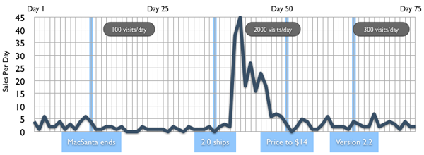

In the tradition of other independent Mac developers such as “Mike Zornek”:http://clickablebliss.com/blog/2007/01/08/billable_the_first_100_days/, “Daniel Jalkut”:http://www.red-sweater.com/blog/191/lawful-prey, and “Gus Mueller”:http://www.gusmueller.com/blog/archives/2005/12/25.html, I’m going to share some sales information from the first 75 days of Wii Transfer.
The following chart shows daily sales (in units sold) for each day. I’ve also highlighted important milestones so you can see what affect they had on sales, such as shipping 2.0 (which brought many links) and increasing the price (from $9 to $14, which brought my first 2.0 day of no sales at all). Finally, there are a few spots where I show the average number of visitors.

(As an aside, I created this chart in Keynote. I love software that is simple and flexible enough to be used for purposes outside its original developer’s intentions. I wrote “more on this subject back in early 2006”:http://www.manton.org/2006/01/limitations_in_toys.html.)
It’s difficult to tell, but the numbers on the right side are on average a little bit higher than the left. Not by much though. Sales just trickle in again right now (a few a day).
So what does it all mean? Here is the basic take-away: Sales are much better than I thought they would be, but not nearly enough to live off of. That’s okay, because I happen to love “my day job”:http://www.vitalsource.com/ (also writing Mac software). However, I can definitely see how it would be possible to do this full time, with some real marketing and a collection of several additional applications. I have done zero marketing for Wii Transfer except listing it on MacUpdate, VersionTracker, and Apple’s download site (where it was featured in the video section).
As you can see, there was a big spike in sales when 2.0 was released. This is a direct result of links from Mac sites like The Unofficial Apple Weblog and Daring Fireball, and gaming sites like Jostiq and others. When traffic goes up, sales go up. This opened my eyes because it really is all about getting your app in front of other users. “As I blogged about previously”:http://www.manton.org/2007/01/wii_transfer_takes.html, I think I also missed some sales opportunities during this period because 2.0 was not very stable.
Other interesting stats: The conversion rate is between 2% and 5%. For every 100 downloads, a few people decide to purchase it. I think many active users probably end up paying for it. Instead of a trial demo period, some features are just crippled, and it isn’t very usable day-to-day without unlocking the full feature set (for example, with music sharing to the Wii, you can only play one song at a time — no iTunes playlists or shuffle).
There are at least a few pirates too. I’m not too worried about them because “you can’t stop pirating”:http://wilshipley.com/blog/2007/02/piracy-reduction-can-be-source-of.html, and most people are honest. One customer was even nice enough to tell me about a pirated serial number he found.
To everyone who purchased Wii Transfer, thanks! When I built 1.0, I wasn’t sure if I would work on it again. Now, several versions later at 2.2, I have a clear roadmap of features (and bugs!) to keep me busy.